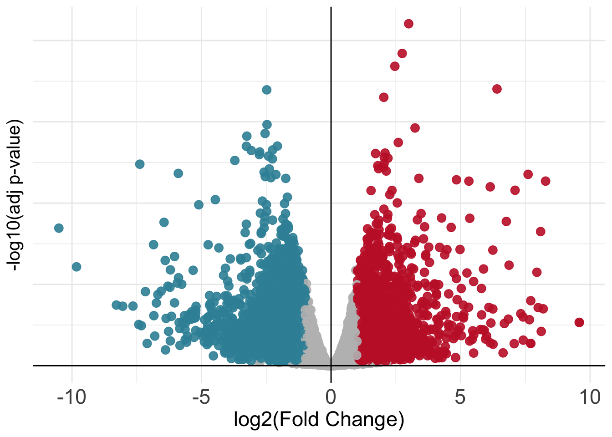
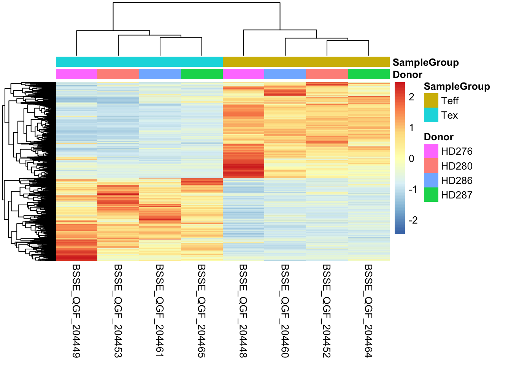
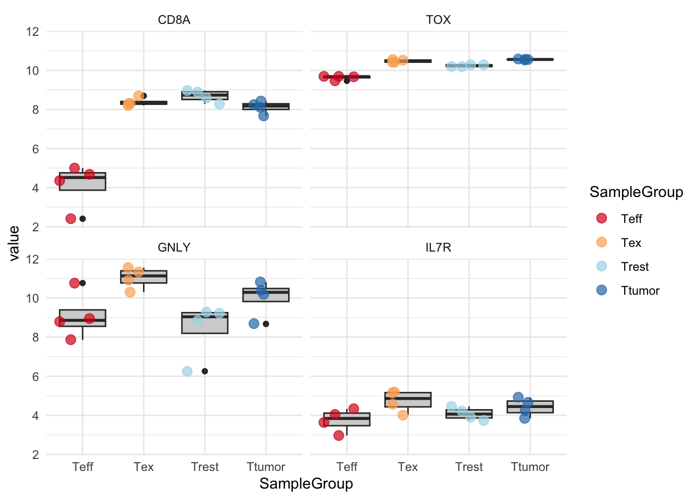
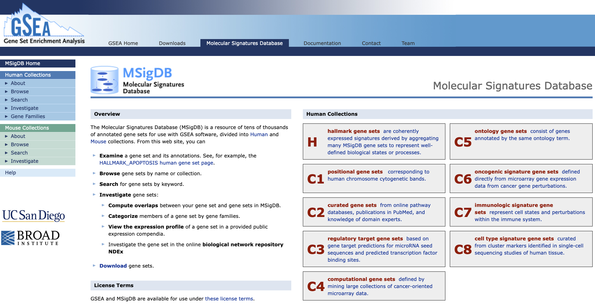
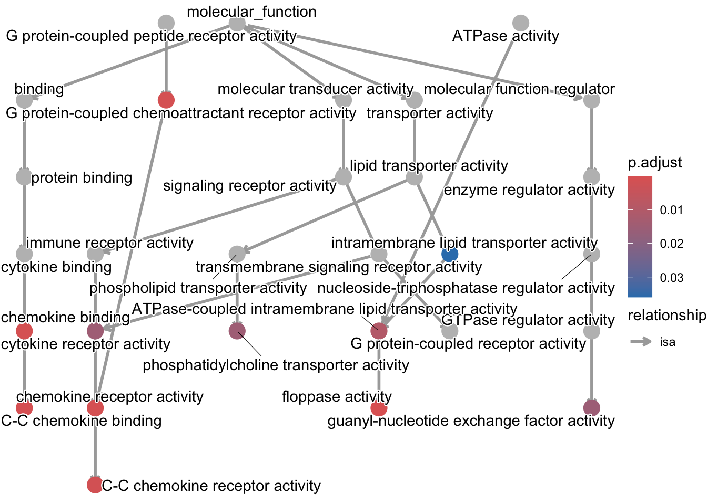
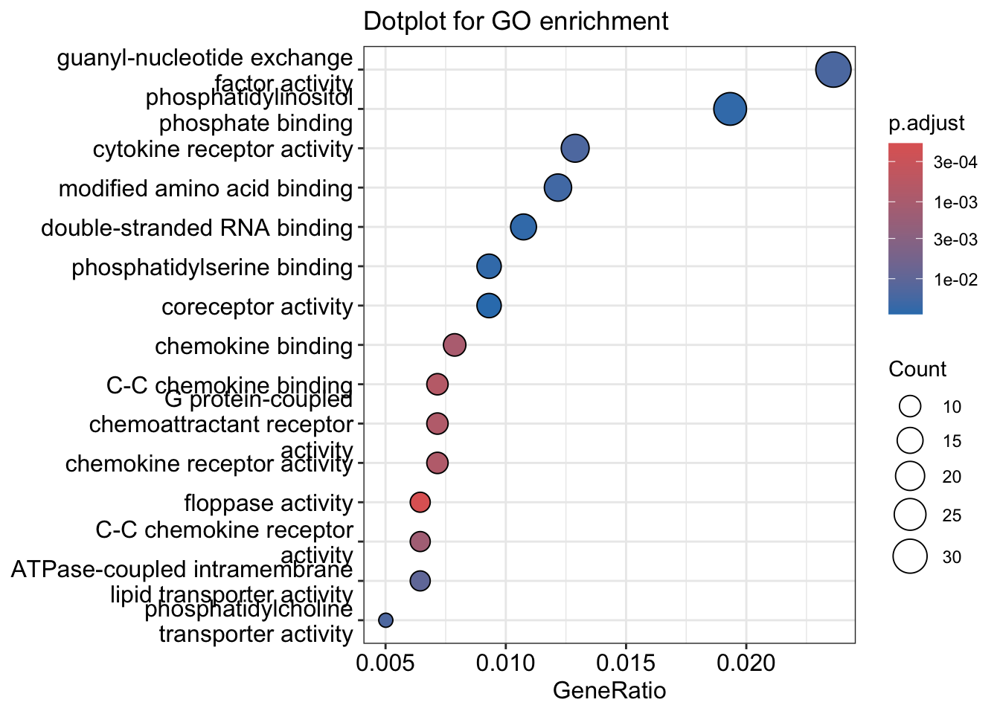
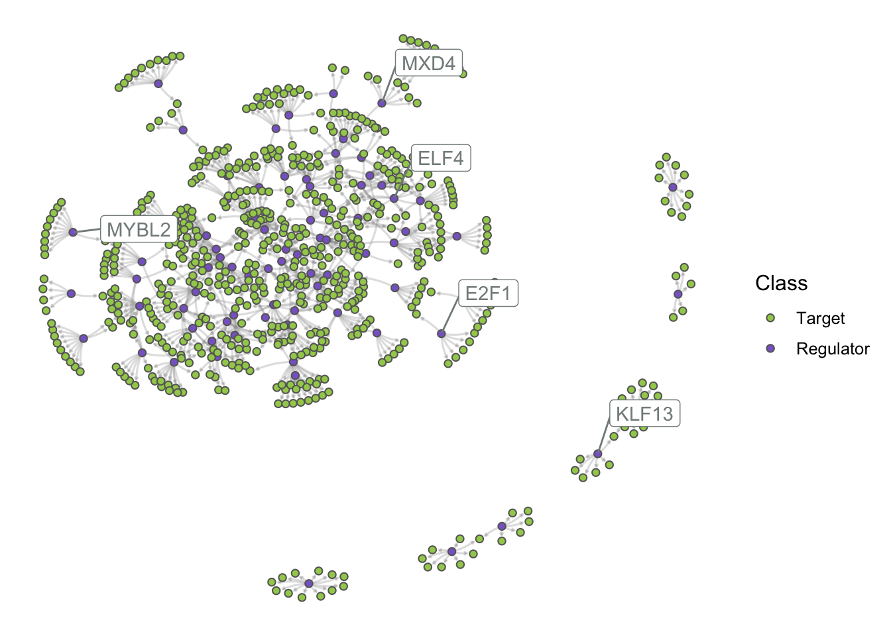

Once we have our results from the comparison, we might want to present them graphically to aid their interpretation by other people or to emphasize messages of interest within them (like the statistics only for some genes of interest). One way to visualize results from a differential expression analysis is to draw a volcano plot. The goal of a volcano plot is to display and summarize the main metrics of output from a differential expression analysis, these consist of P-values and log-fold changes associated with each gene in the dataset for the specific comparison we are performing (Tex vs Teff in our case). These two variables can be plotted together to get a feel for the overall results in the analysis. Let’s plot a volcano summarizing the results of the comparison we have performed.
library(tidyr)# Set the threshold just for visualization!log2FC_val =1padj_val =0.05# Create a table with gene informationvolcano_corr =as.data.frame(res) %>%mutate(names=rownames(res)) %>%drop_na()# Create a separate column in the table with the information needed to color point in three categoriesvolcano_corr$threshold=ifelse(volcano_corr$logFC >= log2FC_val & volcano_corr$PValue < padj_val,"A",ifelse(volcano_corr$logFC <=-log2FC_val & volcano_corr$PValue < padj_val, "B","C"))# Plot!ggplot(volcano_corr, aes(x=logFC, y =-log10(PValue), color=threshold)) +geom_point(alpha=0.9, size=3) +scale_color_manual(values=c( "B"="#3891A6","A"="#C52233", "C"="grey")) +xlab("log2(Fold Change)") +ylab("-log10(adj p-value)") +theme_minimal() +geom_vline(xintercept=0, color='black') +geom_hline(yintercept=0, color='black') +theme(legend.position="none", axis.title.x =element_text(size =17),axis.text.y=element_text(size =0),axis.text.x=element_text(size =17),axis.title.y =element_text(size =15))

Mapping IDs to Gene Symbols
The volcano plot above is nice but it is not so informative since we cannot see any gene name! Unfortunately we do not have recognizable gene names in the res object, as we can see below:
# In this case gene names are the names of the rows of our tablerownames(res)[1:20]
We can see that we currently have Ensembl Gene IDs as opposed to gene symbols! We can fix this by converting between the two, this can be achieved in R through dedicated packages like org.Hs.eg.db which map between the two types of gene identifiers. Let’s do it using the code below.
# Use the package for the conversion between Ensembl IDs and Gene Symbolslibrary(org.Hs.eg.db)volcano_corr$gene_names <-mapIds(org.Hs.eg.db, keys=row.names(volcano_corr), column="SYMBOL", keytype="ENSEMBL", multiVals="first")
We can check that we now have new mapped gene symbols that we can use to make our volcano plot informative!
volcano_corr$gene_names[1:40]
[1] "RPS27AP20" NA "STS" NA "TBL1X" "WWC3"
[7] "HCCS" "MSL3" "PRPS2" NA "TMSB4X" NA
[13] "LINC01203" "EGFL6" "TCEANC" "RAB9A" "OFD1" NA
[19] NA "MOSPD2" NA "CA5B" "ZRSR2" NA
[25] "SYAP1" "TXLNG" "NHS" "SCML1" "CDKL5" NA
[31] NA "PDHA1" "CNKSR2" "MBTPS2" "YY2" "SMS"
[37] "PHEX" NA "PRDX4" "SAT1"
And finally we can try to plot again our volcano with the addition of gene names!
We can also plot differentially expressed genes in the two conditions of our interest using heatmaps. In this case we select genes based on their significance and visualize how their expression values change across samples just like we have done earlier.
# Select conditions to plot, since we are plotting differentially expressed genes, we need to select the two categories in the comparisonconds <-c("Tex","Teff")# Take genesdiffs <-rbind(volcano_corr[volcano_corr$threshold =="A",], volcano_corr[volcano_corr$threshold =="B",])$gene_names# Extract counts from `dds` objectmtx <-cpm(dds)[,rownames(samples[which(samples$SampleGroup %in% conds),])]# Subset for differential genes ids <-rownames(volcano_corr[which(volcano_corr$gene_names %in% diffs),])# Subset matrix for genes of interestmtx <- mtx[ids,]# Create another table for annotating the heatmap with colorsdf <-as.data.frame(samples[,c("Donor","SampleGroup")])# Plot with pheatmappheatmap(mtx, cluster_rows=TRUE, show_rownames=FALSE,cluster_cols=TRUE, annotation_col=df[which(rownames(df) %in%colnames(mtx)),], scale ="row")

Given that the number of differentially expressed genes can sometimes be very high, we cannot pretend to explore them manually one by one understanding their function! As we will see, there are further downstream analyses we can perform to get a sense of trends and pathways activated in the cell type of our interest. These analyses which look at genes in groups or ontologies try to match conditions with functions, to better elucidate what is going on inside cells in a specific condition.
Plot single genes across samples
Here we can plot the expression values of single genes to directly inspect the results of the differential gene expression analysis. Since we are dealing with multiple samples for which a measurement of gene expression has been performed, we are plotting each sample colored by its original category to understand the trends that we detect from the global differential gene expression analysis!
# Select a set of genes to plotgnames_to_plot <-c("CD8A", # Should not differ"TOX", # Previously associated with T cell exhaustion"GNLY", # Previously associated to T effector function"IL7R"# Previously associated to T memory function ) # Plot as a grouped boxplot with jitteringpldf <-cpm(dds, log=TRUE)[rownames(volcano_corr[which(volcano_corr$gene_names %in% gnames_to_plot),]),] %>%t() %>%as.data.frame() colnames(pldf) <- gnames_to_plotpldf %>%merge(samples, by=0) %>% reshape2::melt() %>%ggplot(., aes(x=SampleGroup, y=value)) +geom_boxplot(fill="lightgray") +geom_jitter(aes(color=SampleGroup), size=3, alpha=0.7) +scale_color_brewer(palette ='RdYlBu') +facet_wrap(~variable) +theme_minimal()

💡 Can we check the expression of one of the genes highlighted in the conclusions of the original paper?
🤔 What if we want to plot the two most differentially expressed genes in both directions (both up and down)? hint: catch their names from the volcano_corr table by ordering it on fold-change with the %>% arrange() function
Further Downstream Analyses
Once we have our differentially expressed genes, we can perform various downstream analyses to check the functional aspects of the group of genes which are up- or down-regulated in our condition of interest. In the following sections, we will go through two of these, Gene Set Enrichment Analysis (GSEA) and Gene Ontology Enrichment Analysis (GO).
GSEA
Gene Set Enrichment Analaysis was first published in 2005 as a method to interpret genome-wide expression profiles from RNA-seq data using sets of genes with known biological functions. In this sense, GSEA is used to check at which level a signature of genes is enriched in an expression profile. We can graphically summarize the steps in GSEA using the following picture, from the original publication.
GSEA needs two ingredients, a ranked gene list from our analysis (for instance genes ordered by log-fold change) and a list of genes with biological relevance (for instance genes known to regulate CD8+ T-cell exhaustion).
1. We start by taking our list of up- or down- regulated genes and order them based on the value of their fold-change so that our list will have genes that change a lot positively at the top and ones that change a lot negatively at the bottom. This will represent our ranking.
2. We then take one or more curated and archived gene sets which are related to a biological function we might be interested in investigating in our dataset.
3. Finally we go through our ranking from top to bottom counting the number of times we see a gene which is also in the gene set that we are looking at. We expect to see genes from a given gene set appear at the top of our ranking if that biological function is particularly important in the genes of our ranking.
Over the years, a collection of curated gene sets called MSigDB has been expanded and is now a great resource to check which ones are more or less enriched in our data at hand.

The web interface for the MSigDB gene set database
In our specific use case, we are going to run GSEA on the set of up-regulated genes in CD8+ Tex cells to check if a gene set of exhaustion is indeed enriched in the genes we have found up-regulated. For this task we are going to use the fgsea package. In order to extract the gene set without the need to directly download it, we are going to access MSigDB directly from R using another package called msigdbr.
🚨 WARNING: This code that follows might kill your R session inadvertedly. If this happens, don’t panic, and reload the object we saved before! Use the following syntax to get back on track after you resume the session:
res <-read.table("results.csv", sep =",") samples <-read.table("samples_table.csv", sep =",")
In this way you should be all set to successfully run all the code below! 🙌🏻
Extract MSigDB Signatures
In the following chunk, we use a function from the msigdbr package to extract the gene set of our interest:
library(msigdbr)# Extract the gene sets from the MSigDB databaseimmune_gsets <-msigdbr(species ="human", category ="C7", subcategory ="IMMUNESIGDB")
Let’s see what’s in the immune_gsets object:
# Take a look at what we fetched from the databasehead(immune_gsets, 5)
gene_symbol
ncbi_gene
ensembl_gene
db_gene_symbol
db_ncbi_gene
db_ensembl_gene
source_gene
gs_id
gs_name
gs_collection
gs_subcollection
gs_collection_name
gs_description
gs_source_species
gs_pmid
gs_geoid
gs_exact_source
gs_url
db_version
db_target_species
entrez_gene
gs_cat
gs_subcat
ABCA2
20
ENSG00000107331
ABCA2
20
ENSG00000107331
ABCA2
M3044
GOLDRATH_EFF_VS_MEMORY_CD8_TCELL_DN
C7
IMMUNESIGDB
ImmuneSigDB
Genes down-regulated in comparison of effector CD8 T cells versus memory CD8 T cells.
MM
16492737
GSE1000002_1582_200_DN
2026.1.Hs
HS
20
C7
IMMUNESIGDB
ABCC5
10057
ENSG00000114770
ABCC5
10057
ENSG00000114770
ABCC5
M3044
GOLDRATH_EFF_VS_MEMORY_CD8_TCELL_DN
C7
IMMUNESIGDB
ImmuneSigDB
Genes down-regulated in comparison of effector CD8 T cells versus memory CD8 T cells.
MM
16492737
GSE1000002_1582_200_DN
2026.1.Hs
HS
10057
C7
IMMUNESIGDB
ABHD14A
25864
ENSG00000248487
ABHD14A
25864
ENSG00000248487
ABHD14A
M3044
GOLDRATH_EFF_VS_MEMORY_CD8_TCELL_DN
C7
IMMUNESIGDB
ImmuneSigDB
Genes down-regulated in comparison of effector CD8 T cells versus memory CD8 T cells.
MM
16492737
GSE1000002_1582_200_DN
2026.1.Hs
HS
25864
C7
IMMUNESIGDB
We can see that every row is a different gene (the gene_symbol colums) with its associated gene set (gs_name column). We will now extract a gene set related to CD8+ T-cell exhaustion which comes from this publication and is names GSE9650_EFFECTOR_VS_EXHAUSTED_CD8_TCELL_DN in the database.
# Filter the `immune_gsets` table and take only the genes from the gene set of our interestgene_set_name <-"GSE9650_EFFECTOR_VS_EXHAUSTED_CD8_TCELL_DN"tex_sig_df <- immune_gsets %>%filter(gs_name == gene_set_name)
How many genes do we have in the gene set that we just isolated? We can check this by looking at the number of rows of this new tex_sig_df table that we generated above using the command nrow(tex_sig_df). Doing this should result in having 201 genes.
Perform GSEA
Now we can perform GSEA using the fgsea package in R!
library(fgsea)# Prepare the ranking based on fold-change, from high (expressed in Tex) to low (expressed in Teff)ids <- res %>%arrange(desc(logFC)) %>%rownames()vals <- res %>%arrange(desc(logFC)) %>%pull(logFC)# Set namesnames(vals) <- ids # Prepare gene setgset <-list(tex_sig_df$ensembl_gene)names(gset) <- gene_set_name# Run GSEAfgseaRes <-fgsea(pathways = gset, stats = vals,eps =0.0)
# Take a look at resultsfgseaRes
pathway
pval
padj
log2err
ES
NES
size
leadingEdge
GSE9650_EFFECTOR_VS_EXHAUSTED_CD8_TCELL_DN
0.0001381
0.0001381
0.5188481
-0.4236245
-1.761056
144
ENSG0000....
We can now plot the GSEA results in the standard way:
From the GSEA results, we can see that the current gene set we used is mostly depleted in the differential genes we have in our CD8+ Tex vs CD8+ Teff comparison. Given that the gene set comes from a study carried out in mice in a context of chronic viral infection, this might indicate that our current results reflect a different kind of CD8+ T-cell exhaustion observed in the tumor microenvironment of human tumors as opposed to the process happening during viral infection in mice.
💡 Whenever we use gene sets when testing for enrichment, we have to be sure of where they were isolated in order to avoid misinterpreting results and/or getting to wrong conclusions, like it could have happened in this case!
Gene Ontology Enrichment Analysis
Next, we will try to get a more unsupervised look at what kind of biology is happening inside our CD8+ Tex cells by performing a Gene Ontology Enrichment analysis. This will allow us to check which and how many up-regulated genes in CD8+ Tex cells are represented in various biological processes. We will do this using the clusterProfiler package in R.
up_df <- res %>%as.data.frame() %>%filter(PValue <0.05& logFC >1)down_df <- res %>%as.data.frame() %>%filter(PValue <0.05& logFC <-1)
library(clusterProfiler)# Get up-regulated genesgenes <-rownames(up_df)# Perform gene ontology enrichmentego <-enrichGO(gene = genes,OrgDb = org.Hs.eg.db,keyType ='ENSEMBL',ont ="MF", # Molecular Function, use "BP" or "CC" for Biological Process or Cellular ComponentpAdjustMethod ="BH",pvalueCutoff =0.05,qvalueCutoff =0.05,readable =TRUE)
Let’s now plot the enrichment values that we got with a graph layout.
# Plot results of gene ontology enrichmentgoplot(ego, firstSigNodes=10)

Now we can also plot the results with what is known as a ranked dot plot, here we encode the significance of the enrichment in the color of the dot, while its size represent the overlap of the specific gene set with the one we are using to perform the test (our list of up-regulated genes).
dotplot(ego, showCategory=15) +ggtitle("Dotplot for GO enrichment")

💡 GO analyses might highlight very interesting patterns and generate hypotheses, but are many times quite hard to interpret depending also on the biological system we are studying.
Gene Regulatory Network inference
In this part of the workshop, we will use ARACNE to infer relationships between genes in our data! This is informative since it allows us to group together genes based on correlations across samples. in other words we try to create gene groups (or “hubs” in network analytics terminology) based on how coordinately genes are expressed in the data. The way this works is that we infer which transcription factors might be linked to the regulation of specific genes by analyzing how much each pair of genes is co-dependent. This is of course a simplification of the approach but you can think of the results as a collection of pair-wise gene-gene connections called “directed edges” described by a single “weight” representing the strength of the regulation.
# Create a SummarizedExperiment from `dds`, think of this as another way to store the same information we used before!# Like we did before, we convert gene IDs to more interpretable symbolsse <-SummarizedExperiment(assays =list(counts = dds$counts, norm.factors =matrix( dds$samples$norm.factors,nrow =nrow(dds$counts),ncol =ncol(dds$counts),byrow =TRUE,dimnames =dimnames(dds$counts) ) ),colData = dds$samples, # sample metadatarowData = dds$genes # gene metadata (if present))# We use it as input to aracne through BioNERO# Step 1: filter samplesfinal_exp <-exp_preprocess( se, min_exp =10, variance_filter =TRUE, n =2000)
The second ingredient we need is a list of potential regulators, we will therefore load a set of human transcription factors (TFs) that we can download from a database curated by the University of Toronto.
💡 Download the “TF ensembl IDs” .txt file from the provided link and save it in your data folder!
# Load the TFs!tf_symbols <-read.table("./data/TFs_Ensembl_v_1.01.txt", header = F)
After we have performed the correct filtering to ensure consistency, we can now apply ARACNE!
# Step 2: use ARACNEaracne_obj <-grn_infer( final_exp, method ="aracne", regulators = tf_symbols$V1, nTrees =10) # Usually set to 1,000 - improves accuracy
Now let’s see what our gene regulatory network looks like!
# Show a snapshot of the gene regulatory networkhead(aracne_obj)
We can exchange Ensembl gene IDs with gene names like we did for the volcano plot above to aid with interpretability. The Node1 column should contain transcription factor names that represent our putative regulators!
# Easy convenience function from BioNEROplot_grn(aracne_obj)

💡 Although this visualization is nice to get a global overview, try to re-use the same function above but with interactive = TRUE and see what happens
Show result
🤔 How would you go about intepreting this network in light of the fact that we have different experimental conditions and samples? Can you think of a way to integrate visually the information of the different CD8+ T cells subsets we have in the data?
Recap
Let’s go through what we have seen today:
Learned about Differential Expression Analysis and what it is used for
We performed the analysis on our CD8+ T cell dataset
Managed to extract differentially-expressed genes
Visualized the results in different ways, with each having its own strengths and weaknesses
Interpreted the results with the help of downstream analysis including GSEA and Gene Ontology (GO)
Take-home Messages 🏠
Congratulations! You got the end of the course and now hopefully know the main steps of a bulk RNA-seq data analysis workflow! Some of the key concepts that we have explored during the course can enable us to reach some distilled points of interest:
Design your experiments carefully with data analysis in mind!
Data needs to be carefully explored to avoid systematic errors in the analyses!
Plot and Visualize as much as possible!
Not all information is useful, remeber that it all depends on the biological question!
Omics outputs are immensely rich and one experiment can be used to answer a plethora of questions!
And also remember that your computer is always right!